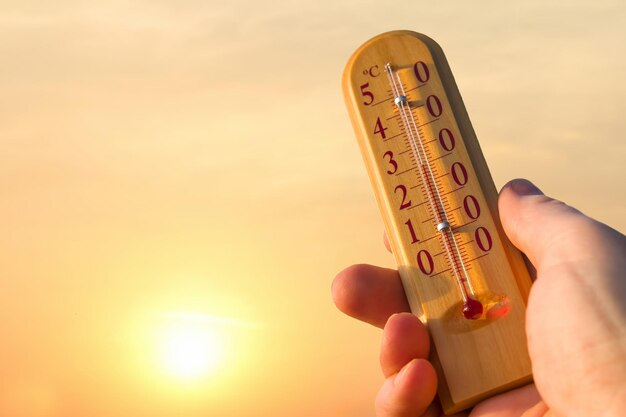
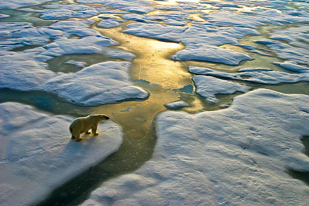

Aquecimento global é um fenômeno verificado ao redor do mundo durante as últimas décadas, indicando um aumento progressivo das temperaturas médias de oceanos e da atmosfera terrestre.
Isso causa consequências na flora e na fauna, além de impactar setores críticos como o agronegócio.

O aquecimento é provocado pelo efeito estufa, fenômeno descrito pela primeira vez em 1859 pelo cientista irlandês John Tyndall.
Ainda que o efeito estufa seja natural, ele é intensificado pelo aumento das emissões antrópicas de GEE (gases do efeito estufa) decorrentes de intervenções humanas.
As medições históricas das emissões de GEE são medidas desde a Revolução Industrial, período do século XVIII onde a industrialização se acelerou, capitaneada pelas primeiras fábricas na Inglaterra.
O processo se intensificou muito no período pós-industrialização, já que a queima de combustíveis fósseis aumentou e, com a nova facilidade em produzir, cresceu também a população mundial – e, consequentemente, o consumo e a produção.
Assim, chegamos ao cenário atual em que vivemos: um planeta com 8 bilhões de habitantes que seguem explorando no mesmo ritmo – na verdade até mais rápido – do que quando havia apenas alguns milhões de pessoas morando na Terra.
Quais São As Principais Causas Do Aquecimento Global?
As causas do aquecimento global são variadas, mas a maioria delas aponta para o mesmo fator: a intervenção do homem na natureza para a exploração de seus recursos.
Essa intervenção irresponsável e até criminosa está na raiz do efeito estufa.
Como vimos, trata-se de um fenômeno não-natural, intensificado pelo aumento de emissões antrópicas dos gases contendo principalmente carbono e metano.
A queima de combustíveis fósseis e o desmatamento são as principais fontes desses gases para a atmosfera.
Até aqui, parece estar clara a origem do problema. Mas de que forma esses gases são emitidos?
Que tipo de ações humanas são as mais potencialmente prejudiciais?
É o que veremos a seguir.
Uso De Combustíveis Fósseis
A maior parte da demanda por energia elétrica e insumos que garantem o transporte ainda é suprida por combustíveis fósseis, cujo uso lança toneladas de dióxido de carbono na atmosfera todos os anos.
Para se ter uma ideia, em 2018 as emissões de carbono provenientes de combustíveis fósseis chegaram a 10 gigatoneladas, ou 4,8 toneladas per capita, segundo relatório do Global Carbon Project.
Veio a pandemia e, com ela, uma esperança, já que houve uma queda expressiva de 5,4% nas emissões de gases estufa em 2020.
Um ano depois, o balde de água fria, com um novo aumento nas emissões que nos fez retornar aos níveis pré-pandêmicos.
Queimadas
As queimadas são outra causa conhecida do aquecimento global, respondendo pela liberação de milhões de toneladas extras de CO2 nos últimos anos.
Além do CO2, a queima de florestas e savanas libera fuligem e carvão que, por serem escuros, absorvem muita luz solar e calor, contribuindo para o aumento da temperatura local, além de dificultar a movimentação de massas de ar.
Dessa forma, as queimadas interferem nas chuvas e no ciclo natural da água, gerando um ciclo vicioso em que as temperaturas se elevam, tornando o fogo mais resistente, e o fogo, por sua vez, eleva as temperaturas.
Nesse quesito, nenhum outro país tem gerado tanta preocupação quanto o Brasil, onde o desmatamento da floresta amazônica segue em ritmo acelerado.
No período de 1988 a 2020, carbonizou-se uma área de 13,2 mil km2, que equivale a nada menos que 13 vezes a área da cidade de São Paulo.
Desmatamento
A extração de árvores tem um impacto considerável sobre o aquecimento global, uma vez que elas captam gases de efeito estufa, reduzindo seu efeito adverso sobre a temperatura.
Um estudo publicado na revista Nature Communications em 2018 revelou ainda que as florestas produzem substâncias que resfriam a atmosfera: os compostos orgânicos voláteis biogênicos ou BVOCs.
Combinando todos os impactos conhecidos, a derrubada das reservas florestais pode levar a temperatura a subir até 0,8°C nas próximas décadas, resultando em consequências catastróficas.
Como vimos, entre as grandes florestas do mundo, a Amazônica é uma das que mais sofrem devastação.
Agricultura E Pecuária
Segundo Jim Skea, copresidente do Grupo de Trabalho III do IPCC, as atividades agropecuárias representam 23% do total das emissões de gases estufa.
Isso porque a maioria delas se baseia em modelos não sustentáveis, que realizam o desflorestamento para abrir espaço para os animais e plantações, agravando o quadro de queimadas e desmatamento.
Também incentivam o consumo de carne bovina, lançando mais gás metano na atmosfera, e o uso de fertilizantes – por usar essas substâncias, a agricultura é responsável por três quartos das emissões globais de óxido nitroso.
Embora o setor agropecuário gere empregos e seja muito importante para a economia, isso não pode e nem deve acontecer às custas do meio ambiente.
Por isso, é preciso desde já rever o modo de produção desse setor, um dos que mais contribuem para o aquecimento global.
Excesso De Consumo
Lembra que dissemos no início que, se as empresas poluem, é porque há pessoas que consomem os produtos resultantes de seus processos?
Essa simples constatação é corroborada pela ONU, pois um estudo afirma que o alto consumo de carne e laticínios, principalmente no ocidente, é uma das bases do aquecimento global.
Além disso, segundo um novo relatório do IPCC, as atividades agrícolas são responsáveis por consumir cerca de 70% da água doce em todo o mundo.
Portanto, o consumo sustentável é a chave para virar esse jogo que, até agora, a humanidade está perdendo de goleada.
Uma das saídas, de acordo com a ONU, é reduzir o consumo de carne, dando preferência a uma dieta mais rica em vegetais.

O aquecimento global é uma preocupação ambiental urgente que demanda a atenção global de todos os setores da sociedade. Trata-se de um fenômeno climático complexo, impulsionado principalmente pelas atividades humanas que liberam grandes quantidades de gases de efeito estufa na atmosfera.
O aumento das temperaturas médias da Terra tem consequências significativas e multifacetadas. Uma das evidências mais marcantes é o derretimento acelerado das geleiras e calotas polares, contribuindo para o aumento do nível do mar. Isso não apenas ameaça ecossistemas costeiros e comunidades, mas também intensifica eventos climáticos extremos, como furacões e inundações, que se tornam mais frequentes e devastadores.
Além dos impactos ambientais, o aquecimento global afeta a biodiversidade, provocando mudanças nos habitats e nos padrões de migração de diversas espécies. Ecossistemas vulneráveis estão sob ameaça, e a perda de biodiversidade pode desencadear efeitos em cascata, comprometendo a estabilidade de todo o planeta.